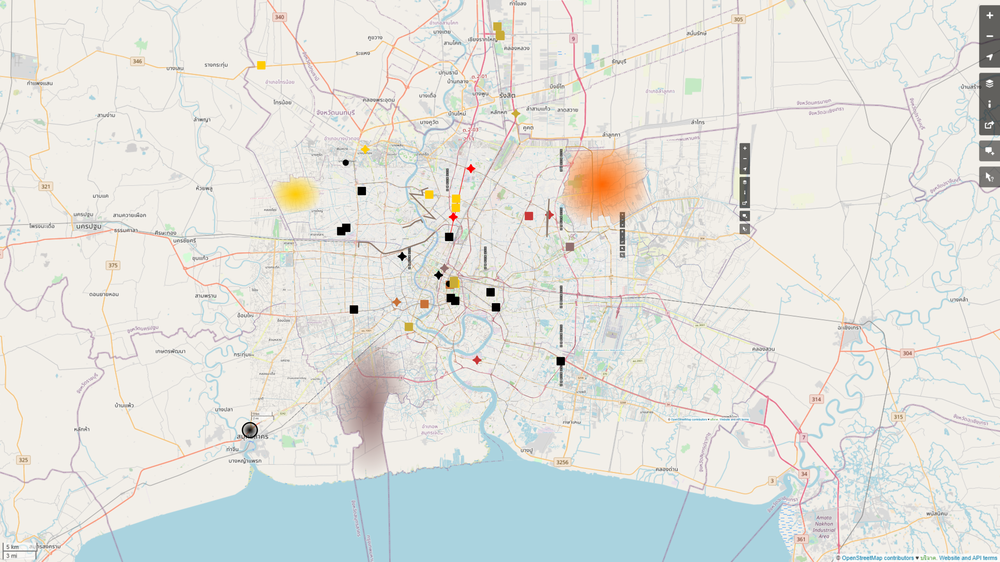

Bad news.

Picture courtesy of THAIPRESS.co
Bad news.
Picture courtesy of worldometers.info, screenshotted on 23 December
Bad news.
The second wave is upon us, Thailand.
I spent the whole evening today mapping out the places that were visited by confirmed covid cases in the past week, and things seem to be hitting the fan. Remember, these places were visited some 10 days before their symptom onsets, and SO many people were out and about in that timeframe, because back in 13 December it seems we had zero internal transmission.
I color coded the points of interest so that the same colored points are visited by the same person, and black for places I can't link to a case but is confirmed to have been visited or shutting down. Does shutting down a place some two weeks after the confirmed case being there work?
That map has information up to around 9pm today. Quite a lot more has come up since then.
Legend:
- stars = hospitals where cases were diagnosed
- squares = places visited by confirmed cases in their timelines
- big circle = Central Shrimp Market in Samut Sakhon, the superspreader event epicenter
- small circles = places closing down, not in any timeline as of yet
- lines = approximate path mobile food trucks visited (รถพุ่มพวง; focused around Nonthaburi and northeastern Bangkok)
- areas = districts, because the timelines won't say more
Bad news.